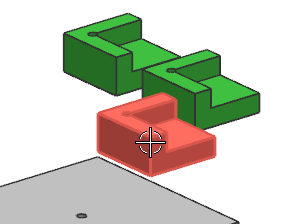
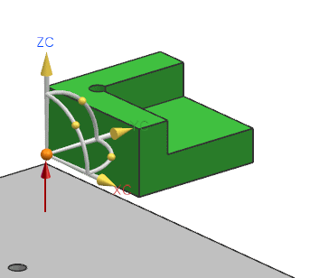

移动剩余的定位器
您将在图形窗口中显示剩余的 des03_tool_locator 组件并移动它们到相应的底座拐角处，您将不使用碰撞检测。
-
在装配导航器中，选中三个隐藏定位器的复选框。

-
选择其中一个 des03_tool_locator 组件。

-
在变换组，从运动列表中选择动态。
注意到操纵器位于定位器的中央。
在移动组件时一个很好的做法是将操作器移动到组件和装配共享的对象，比如拐角点。
-
选中只移动手柄复选框。
-
确保终点在选择工具条上被激活，移动操纵器到如图所示定位器的拐角点。


-
清除只移动手柄复选框。
这将让操纵器和定位器一起移动。
-
确保终点在选择工具条上被激活，移动操纵器到如图所示底座的拐角点。

-
拖动 X-Y 旋转手柄来使定位器组件和底座对齐。

在您旋转手柄时，如果定位器和工件组件发生碰撞，它们将高亮显示，当您结束时，不再高亮显示，因为组件之间不再干涉。

-
在碰撞检测下，从碰撞动作列表中选择无。
-
点击应用。
-
移动剩余的 des03_tool_locator 组件到相应的 des03_tool_baseplate 拐角上。

因为您还没有想要退出移动组件对话框，您应该在移动各个组件之后点击应用而不是确定。